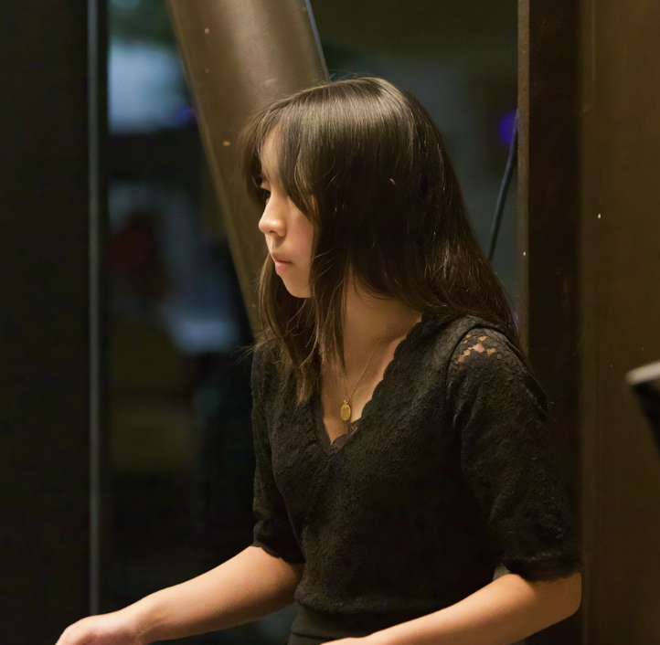
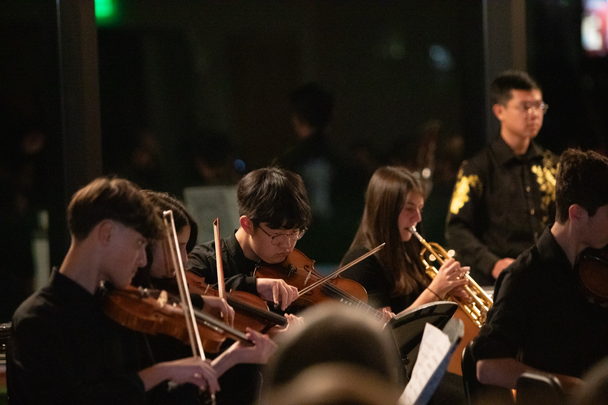

Luca Mazo
Co-Director
Luca has played piano for twelve years and spends a lot of his free time writing music. He studies composition and music theory at the San Francisco Conservatory, and co-directs Meaning in Music with Lilian.
Meaning in Music is run entirely by students. These are the three of us who started it and keep it organized, and below them, the instructors who do the teaching.
Co-Director
Luca has played piano for twelve years and spends a lot of his free time writing music. He studies composition and music theory at the San Francisco Conservatory, and co-directs Meaning in Music with Lilian.

Co-Director
Lilian has played piano for twelve years. She co-directs Meaning in Music and leads our outreach, which is how most families hear about us in the first place.
Director of Logistics
Henry has played piano for eleven years and violin for six. He handles logistics: the budget, this website, and the day-to-day work of getting instruments and schedules where they need to be.

Our instructors are high school musicians who play in orchestras, bands, and chamber groups, and who give up an afternoon a week to teach a kid one-on-one.
We're putting together a page to introduce them properly. In the meantime, if you're in high school, play an instrument, and want to teach, we'd love to hear from you.
Ask about teaching